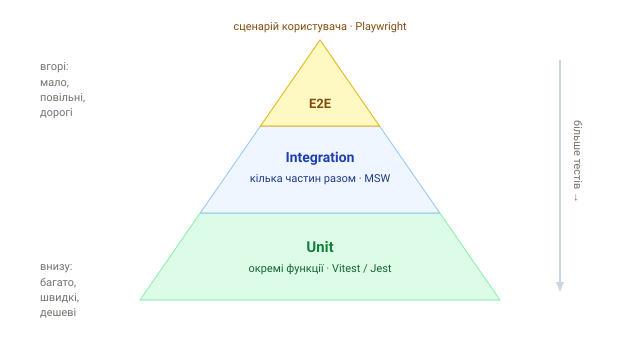

1. Де ми зупинились
У розділі «Тестування» ми писали модульні тести (Vitest) на окремі функції й тести компонентів (React Testing Library). Вони швидкі й точкові, але перевіряють частини. А чи працює застосунок цілком — від кліку в браузері до відповіді сервера — вони не кажуть.
2. Що таке E2E-тести
E2E (end-to-end) тести відтворюють сценарій живого користувача у справжньому браузері: відкрити сторінку, ввести логін, натиснути кнопку, перевірити, що зʼявився результат. Вони ганяють увесь стек разом — фронтенд, мережу, бекенд — і ловлять баги, яких не видно на рівні окремих функцій.
E2E відповідають на питання «чи працює продукт для користувача». Модульні — «чи правильна ця функція». Потрібні обидва рівні, але з різною кількістю.
3. Піраміда тестів
Тести розподіляють за принципом піраміди: багато швидких і дешевих unit-тестів унизу, менше інтеграційних усередині й небагато повільних E2E зверху.

- Unit — миттєві, ізольовані, їх сотні;
- Integration — кілька частин разом (напр. з замоканою мережею через MSW);
- E2E — повільні й «дорогі» в підтримці, тож покривай ними лише ключові сценарії (вхід, оплата, оформлення).
Антипатерн — «перевернута піраморіжка»: сотні E2E й майже нема unit. E2E повільні й крихкі; покривати ними кожну дрібницю — довго й боляче. Тримай їх для критичних шляхів.
4. Що таке Playwright
Playwright — сучасний інструмент E2E-тестування від Microsoft. Керує справжніми браузерами (Chromium, Firefox, WebKit) через єдиний API. Його сильні сторони:
- авто-очікування — сам чекає, поки елемент зʼявиться й стане клікабельним (менше «мерехтливих» тестів);
- крос-браузерність — один тест ганяється в трьох рушіях;
- інструменти — генератор коду, trace viewer, UI-режим для дебагу;
- працює з будь-яким стеком (React, Next.js, звичайний HTML).
Альтернатива — Cypress; принципи схожі, ми візьмемо Playwright.
5. Як виглядає тест
import { test, expect } from '@playwright/test';
test('користувач бачить заголовок', async ({ page }) => {
await page.goto('https://example.com');
await expect(page.getByRole('heading', { level: 1 })).toBeVisible();
});Далі в розділі: встановлення й запуск, локатори та дії, перевірки, реальні сценарії (форми, вхід, мокання мережі) і запуск у CI.